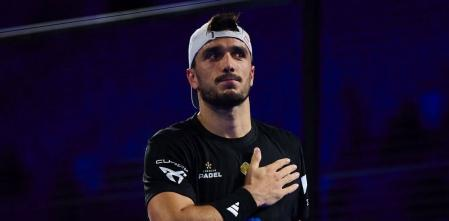

News · Major de México
Ale Galán will miss the Acapulco Major and sets his sights on the Finals in Barcelona
He shared the news himself on Instagram on Saturday. Thanking everyone first, and with one clear goal: to be back for the Finals in Barcelona, 10-13 December.
By Luis González · · 2 min read

He said it himself. An Instagram story, this Saturday.
Ale Galán won't play the Acapulco Major.
But the message doesn't end there. It ends with a goal: "I keep working hard to come back, with the aim of playing the Finals."
He already has a date in mind. 10 to 13 December, at the Palau Sant Jordi in Barcelona.
Thanks first
Galán starts by saying thank you. To the people following his recovery closely. To the messages of support he's receiving. And to Mexico.
He hasn't said what the injury is. What he does say is where he's heading.
Four tournaments out
Acapulco will be the fourth tournament in a row without him.
First, the Kuwait Major. Then the World Cup in Qatar with Spain. After that, the Dubai P1. And now, Mexico.
His last match was on 17 October, in the Milan semi-finals.
If he makes it to Barcelona, almost eight weeks will have gone by.
Chingotto, his partner, hasn't played on tour since then. Only the World Cup, with Argentina.
The spot is safe
In the Race, Galán and Chingotto are third, with 11,980 points. Only Coello and Tapia are ahead.
Next come Lebrón and Augsburger, with 7,705. Even if they won Acapulco, worth 2,000, they wouldn't catch them.
On points, their place in Barcelona isn't in danger.
He just needs to get there.
Acapulco, where it all began
Acapulco isn't just any tournament for Galán.
In March 2024 he played his last tournament there with Juan Lebrón. They lost the final to Coello and Tapia.
Three days later, in Puerto Cabello, he was already playing with Chingotto.
And last year, at the Major, Galán and Chingotto reached the final. They lost it to Coello and Tapia: 6-4, 7-6.
At the Finals in Barcelona, another final against them. Close again: 6-7, 6-3, 7-6.
Next stop, Barcelona
The Acapulco main draw starts on Monday.
This time, without him.
His date is Barcelona. We'll be waiting for him there.
— Luis González
Advertisement

Advertisement